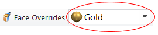

Apply detailed stylistic changes to assemblies with Face Overrides
-
In an assembly, select a part or subassembly and choose View tab→Style group→Face Overrides .
-
In the Face Overrides dialog box, do the following:
Use the various tabs and options to override the face styles and edge style on the part, and then click OK to apply them to the model.
-
(Optional) To save the face style changes that you made as a new style:
-
In the Face Overrides dialog box, click Save As.
-
In the New Style from Overrides dialog box, type a name for the new style.
The new style is added to the Face Styles list in the Style dialog box.
-
-
Instead of opening the Face Overrides dialog box, you can quickly select and apply a face style from the list adjacent to the Face Overrides command.

-
To select and apply a newly created face style to another model:
-
Choose View tab→Style group→Styles command.
-
In the Style dialog box, in the Style type box, click Face Styles.
-
In the Styles box, click the name of the face style you created.
-
How do I
Search for a style in the Style PaletteApply a face style to a part with the Style Palette
Create a face style to apply to parts
Delete a face style from a document
Learn more
Using the Style PaletteLook up more details
Face Overrides dialog boxEdges Tab
Faces Tab
Texture Tab
Bump Tab
Appearance Tab
New Face Style dialog box
Face Style Name Tab
Modify Face Style dialog box
Reflection Box tab (View Overrides dialog box)